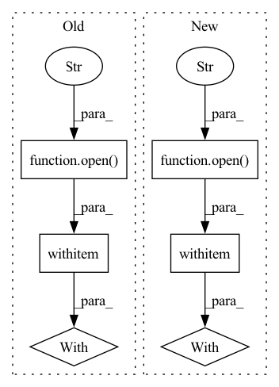

Pattern ID :12753
Before Change
train_data = ujson.load(f)
test_file = test_data_dir + "test" + str(idx) + "_" + ".json"
with open( test_file, "r") as f:
test_data = ujson.load(f)
return train_data, test_data
After Change
test_data_dir = os.path.join("../dataset", dataset, "test/")
test_file = test_data_dir + "test" + str(idx) + "_" + ".npz"
with open (test_file, "rb") as f:
test_data = np.load(f, allow_pickle=True)["data"].tolist()
return test_data
In pattern: SUPERPATTERN
Frequency: 4
Non-data size: 6
Instances Fragment ID: 43230787
Project Name: tsingz0/pfl-non-iid
Commit Name: 4f394efe04f30dbd3cab4278467631854f997903
Time: 2022-01-14
Author: 2719584131@qq.com
File Name: system/utils/data_utils.py
M Class Name: AnonimousClass
N Class Name: AnonimousClass
M Method Name: read_data(3)
N Method Name: read_data(2)
M Parent Class:
N Parent Class:
M File Name: system/utils/data_utils.py
N File Name: system/utils/data_utils.py
M Start Line: 64
M End Line: 75
N Start Line: 63
N End Line: 82
Before Change
if read_cache:
possible_filelist = os.path.join(dir, "files.list")
if os.path.isfile(possible_filelist):
with open( possible_filelist, "r") as f:
images = f.read().splitlines()
return images
if recursive:After Change
images = []
if meta_path is not None:
with open (meta_path, "r") as f:
lines = f.readlines()
from tqdm import tqdm
for line in tqdm(lines):
line = line.strip() Fragment ID: 43230786
Project Name: mit-han-lab/gan-compression
Commit Name: 788f6907d955559d0539fc54acea0e0102e4a6eb
Time: 2021-01-11
Author: lmxyy1999@foxmail.com
File Name: data/image_folder.py
M Class Name: AnonimousClass
N Class Name: AnonimousClass
M Method Name: make_dataset(5)
N Method Name: make_dataset(5)
M Parent Class:
N Parent Class:
M File Name: data/image_folder.py
N File Name: data/image_folder.py
M Start Line: 33
M End Line: 60
N Start Line: 33
N End Line: 55
Before Change
type_list.append(obj.type)
ry_list.append(obj.ry)
with open( "box3d_dimensions.pickle","wb") as fp:
pickle.dump(type_list, fp)
pickle.dump(dimension_list, fp)
pickle.dump(ry_list, fp)
After Change
dimension_mean = np.array(dimension_list).mean(0)
print(dimension_mean)
with open (os.path.join(BASE_DIR,"box3d_mean_dimensions.pickle"),"wb") as fp:
pickle.dump(dimension_mean, fp)
Fragment ID: 43230785
Project Name: simon3dv/frustum_pointnets_pytorch
Commit Name: bb2e3b1c4e11a1d358f5e5b3d1bfa0c150d75db8
Time: 2020-02-20
Author: gzfansiming@gmail.com
File Name: kitti/prepare_data.py
M Class Name: AnonimousClass
N Class Name: AnonimousClass
M Method Name: get_box3d_dim_statistics(2)
N Method Name: get_box3d_dim_statistics(1)
M Parent Class:
N Parent Class:
M File Name: kitti/prepare_data.py
N File Name: kitti/prepare_data.py
M Start Line: 297
M End Line: 319
N Start Line: 300
N End Line: 325
Before Change
outdict = server.run()
// save results as method{}_mpara{}_r{}_b{}_e{}_lr{}_p{}_seed{}.json file
filename=output_filename(option, server)
with open( "task/"+ option["dataset"] + "/record/" + filename, "w") as outfile:
json.dump(outdict, outfile)
if __name__ == "__main__":
main()
After Change
// start federated optimization
output = server.run()
// save results as .json file
with open ("fedtask/"+ option["task"] + "/record/" + flw.output_filename(option, server), "w") as outfile:
ujson.dump(output, outfile)
if __name__ == "__main__":
main()
Fragment ID: 43230780
Project Name: wwzzz/easyfl
Commit Name: 96abe773a60b7d62967fbee49a4bcb9fef1ed740
Time: 2021-08-21
Author: zzz510711928@gmail.com
File Name: main.py
M Class Name: AnonimousClass
N Class Name: AnonimousClass
M Method Name: main(0)
N Method Name: main(0)
M Parent Class:
N Parent Class:
M File Name: main.py
N File Name: main.py
M Start Line: 6
M End Line: 16
N Start Line: 6
N End Line: 16